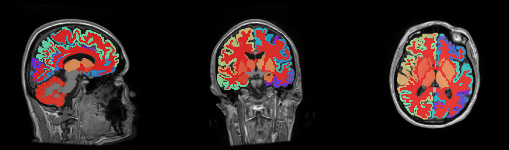

Grey Matters

Your brain is normal in appearance on this scan. No abnormal lesions, tumors, or structural abnormalities are seen. The ventricular system, sulci, and gyri are all well defined and symmetric. The brainstem and cerebellum are also normal in appearance